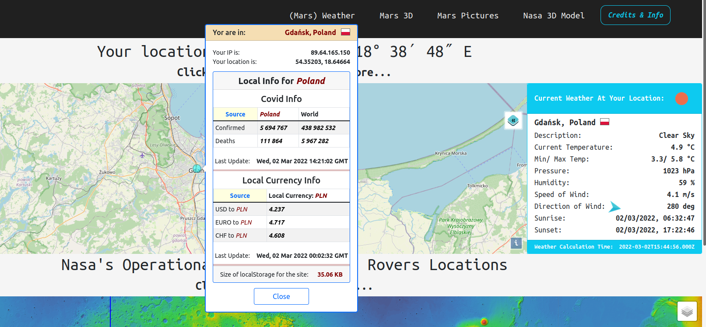
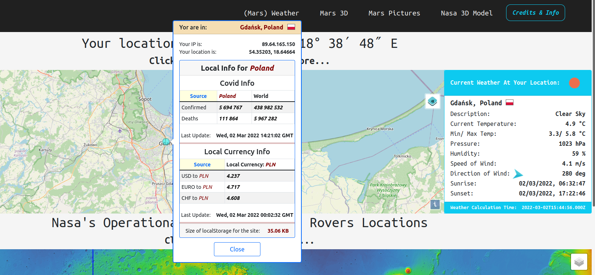

MarsInfo App
 

An application that provides a lot of information about Mars.
Link to the application
Link to the repository
The are five pages.
The first page as Home is NASA's Astronomy Picture of the Day. You can see daily picture provided by NASA APis by
selecting a date or random date.
The second page as Mars Weather. The are two maps. Each map has 3 layers you can choose. Earth map with your
location and your local weather conditions. When you click on the blue point on the first map you'll see a popup
with another information such as exchange rates for your local currency and Covid situation in your country, your
IP address and coordinates. Second map: Mars map with Nasa's operational Mars lander and rovers locations (three
devices as Feb, 2022). When you click on the icon, you will see information about the lander or rover. At the
bottom of the page is a graph showing Martian weather conditions over the past seven days. All data about Mars
are provided by NASA APis.
The third page as Mars 3D. There is a 3D model of Mars generated by CesiumJS. You can choose one of two layers.
On the Mars model there are three Nasa's operational devices (as Feb, 2022). When you click on the icon you will
see information about the lander or one of two rovers.
The fourth page as Mars Pictures. There is an accordion with two tabs. The first tab show pictures from Mars
taken by Curiosity Mars Rover (operational). The second one shows pictures taken by inactive rovers on Mars:
Opportunity and Spirit. Pictures are provided by NASA APis. You can watch the pictures in a lightbox.
The fifth page as Nasa 3D Model. This is 3D animation showing Mars based on Three.js library and
Nasa's 3D .glb Model of Mars.
More information is provided in
README.md.